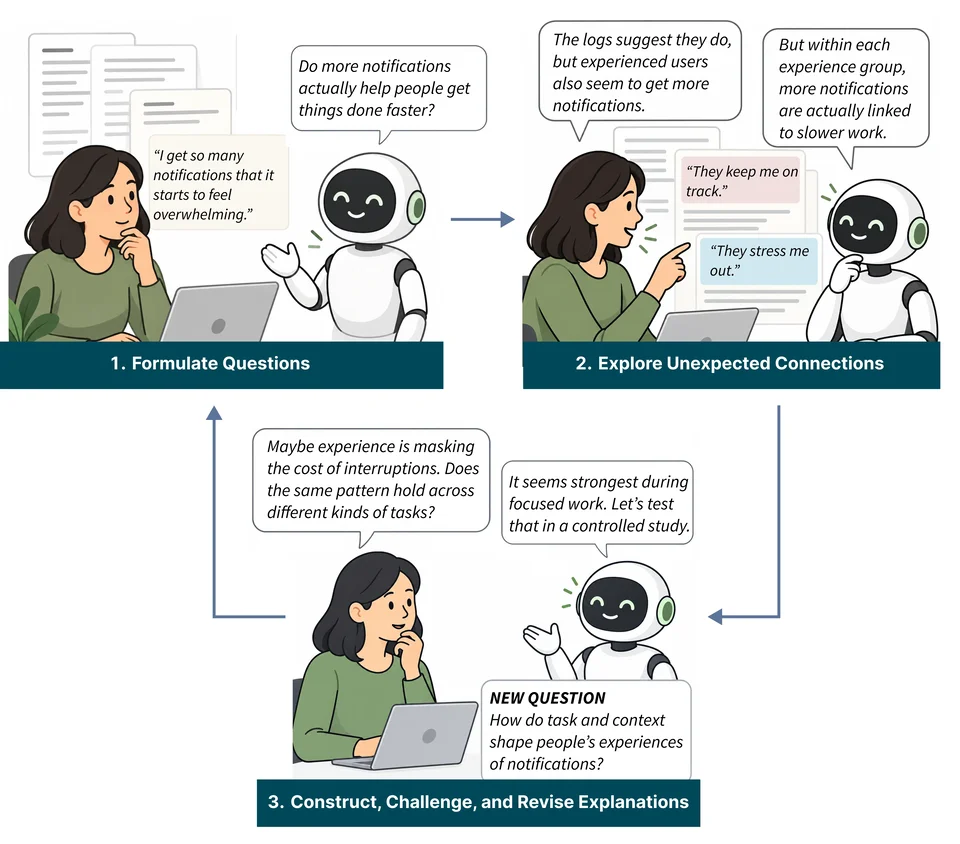

Whose
Human-AI Co-Discovery of Knowledge
About
AI systems increasingly help formulate ideas, explore data, and develop explanations. Yet a plausible or useful finding does not necessarily expand or deepen human knowledge. Discovery and understanding can reinforce one another: an unexpected connection may change how people frame a problem and what they ask next.
This workshop explores human-AI co-discovery of knowledge: how people and AI develop new questions, connections, and explanations together. We invite researchers and practitioners to examine human agency, evidence, learning, and the recognition of contributions, and to develop a shared research agenda for discovery with AI.
Call for Participation
An invitation to explore co-discovery
How do people and AI develop new questions, connections, and explanations together? A finding may be useful without deepening human understanding, and an insight may be new to a person or team without being new to a field. This workshop invites researchers, designers, and practitioners to examine how discovery emerges through interaction, how its evidence is assessed, and how human agency and contributions are recognized.
We aim to connect perspectives across research and practice, compare experiences of discovery with AI, and develop a shared research agenda. Two 90-minute in-person sessions will include a keynote, a human-AI panel, two blocks of lightning talks, and an interactive roundtable activity. Poster exchange will take place during the conference coffee break, with authors encouraged to share posters on their own devices. Participants will explore questions with AI, compare interpretations, and discuss turning points and unresolved difficulties.
What to contribute
We welcome contributions that offer a clear perspective, concrete experience, or open question for discussion:
- Position papers and critical perspectives on unresolved questions, tensions, or alternative visions for human-AI co-discovery.
- Empirical studies and accounts of practice examining how interaction shapes questions, interpretations, findings, or human understanding.
- System descriptions and design concepts that support exploration, explanation building, evidence assessment, reflection, or human agency.
- Work in progress and case descriptions, including unsuccessful investigations that reveal limitations, unexpected behavior, or lessons for future inquiry.
Concrete examples of discovery with AI are especially welcome. A contribution might trace how an initial idea changed, what led people to challenge an interpretation, or what they learned even when the investigation remained inconclusive.
Topics and questions
Contributions may address one or more of the following directions:
How do people and AI develop questions, connections, and explanations together?
- Interpreting together. How people and AI make sense of data and existing knowledge, formulate questions, and revise interpretations as evidence develops.
- Serendipity and unexpected connections. How interaction with AI shapes the recognition of unexpected patterns, relationships, and possibilities, and how people decide which connections are worth pursuing.
- Developing and testing explanations. How people and AI construct, compare, challenge, and revise explanations, models, and representations, including the assumptions that underpin them.
How do people guide co-discovery, and how are contributions recognized?
- Human agency in co-discovery. How people direct inquiry, work with proactive AI agents, delegate tasks, and decide when to intervene, redirect an exchange, or pursue another direction.
- Whose contribution, whose discovery? How human and AI contributions become visible, and how credit, intellectual ownership, and responsibility are understood and negotiated.
What do people come to understand through co-discovery?
- Human understanding and learning. What people come to understand through co-discovery, how that understanding changes over time, and how reflection and further questioning develop even when an investigation remains inconclusive.
What counts as a discovery, for whom, and on what evidence?
- Evidence, uncertainty, and failure. How people and AI seek counter-evidence, recognize misleading patterns, work with uncertainty, and learn from unsuccessful inquiry.
- What counts as a discovery? What makes a connection or finding new and worthwhile for an individual, a team, or a field, and how novelty and value vary across research and practice.
Submission and review
Submit a 2–4-page paper in ACM double-column format, excluding references. The submission channel and deadline will be posted here if the workshop is accepted.
Each submission will receive two reviews from program committee members without conflicts of interest. Reviews will consider relevance to the workshop, quality appropriate to the contribution type, and potential to stimulate discussion. Authors will receive brief written feedback, and the organizers will make the final selection.
Accepted contributors will be invited to give brief talks and share posters during the conference coffee break. All participants will take part in discussion and the interactive roundtable activity.
Sharing and continued discussion
With authors' permission, accepted papers and presentation materials will be shared on the workshop website. Authors may also post their papers on arXiv, and the organizers will compile an arXiv index. We do not plan separate archival proceedings.
Interested participants may also contribute to a follow-up perspective or research-agenda paper for an HCI venue, with authorship reflecting substantive contributions to synthesis and writing.
Timeline
- Submission deadline and participant notification
- To be announced, following the CHI workshop timeline
- Workshop date and room
- To be announced if the workshop is accepted
Program
Session 1: Perspectives
-
5 min
Welcome
Workshop goals and overview of activities.
-
30 min
Keynote with Q&A
Daniel McDuff, Google Research.
-
25 min
Lightning talks: first block
Talks of about three minutes each by authors of accepted contributions.
-
30 min
Human-AI panel discussion
Daniel McDuff, Sherry Tongshuang Wu, Toby Jia-Jun Li, and an AI agent.
Conference coffee break and poster exchange
Authors are encouraged to share posters on their own devices during the conference coffee break to reduce printing.
Session 2: Co-Discovery
-
20 min
Lightning talks: second block
Talks of about three minutes each by authors of accepted contributions.
-
50 min
Interactive roundtable activity
Seven cross-disciplinary groups explore a question with AI, identify a turning point or unresolved difficulty, and reflect on it through the four workshop questions.
-
15 min
Group reports and collective discussion
Two-minute group reports, followed by a collective discussion of recurring themes and differences.
-
5 min
Closing and next steps
Summary and opportunities for continued exchange after the workshop.
Invited Guests
Keynote Speakers
-
Google Research
Daniel builds machine learning systems that sense, model, and synthesize human behavior, with an emphasis on health, physiology, and affective computing. His research spans camera-based physiological measurement, wearable foundation models, and health agents that turn longitudinal sensor data into personal and clinical insight.

Panelists
-
Carnegie Mellon University
Sherry is an Assistant Professor in the Human-Computer Interaction Institute at Carnegie Mellon University. Working at the intersection of HCI and natural language processing, she supports people interacting with imperfect AI by helping them debug and correct it interactively, with award-winning papers at venues such as ACL, CHI, TOCHI, and TVCG.
-
University of Notre Dame
Toby is an Assistant Professor of Computer Science and Engineering at the University of Notre Dame, where he leads the SaNDwich Lab and directs the Human-Centered Responsible AI Lab. He designs and studies interactive systems that help people create, configure, and extend AI-powered systems, including human-AI collaboration for the future of work.


Organizers
Organizing team
-
Zhihan Jiang
Columbia University
-
Yifang Wang
Florida State University
-
Ruishi Zou
Harvard University
-
Shiyu Xu
University of Michigan
-
Rui Sheng
Northeastern University
-
Samuel Schmidgall
Google DeepMind
-
Chenhao Tan
University of Chicago
-
Xuhai “Orson” Xu
Columbia University


Connect
Our opt-in Discord community will support discussion, resource sharing, and connections before, during, and after the workshop. Interested researchers and practitioners beyond the workshop are welcome.
For questions, contact zj2445@cumc.columbia.edu.